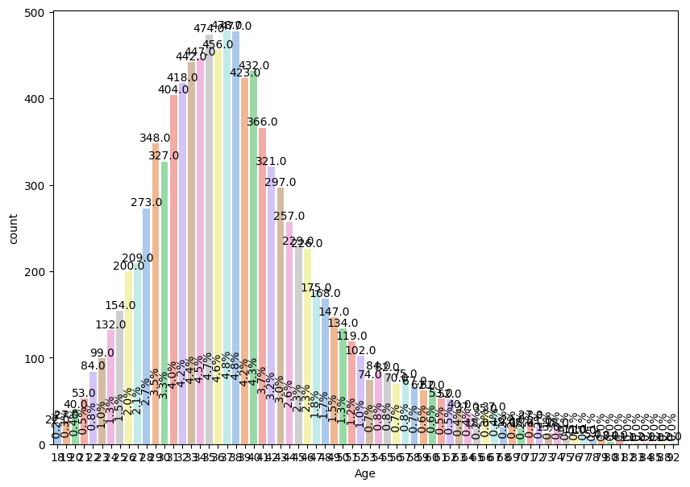
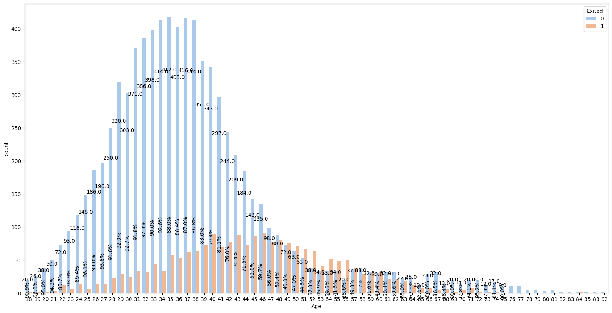
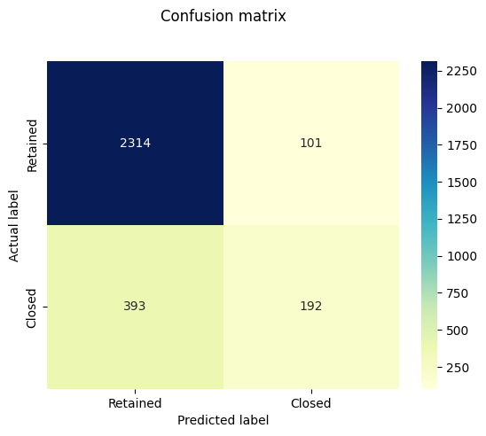
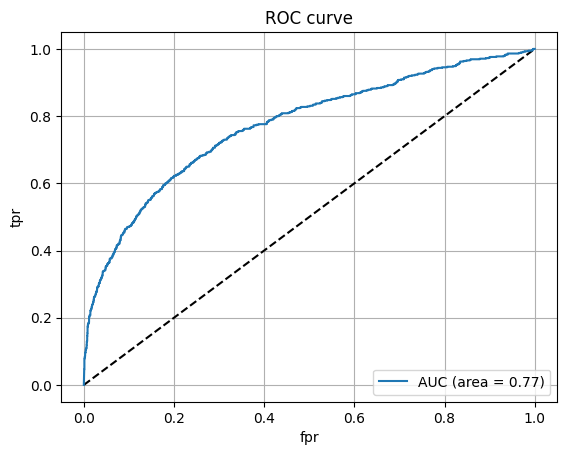

#Confusion Matrix
* Accuracy
number of examples correctly predicted / total number of
examples
Aim: Build an Artificial Neural Network to implement Regression task using the Back-propagation algorithm and test the same using appropriate data sets.
Pratham Goyal A2345924079 4CSE-2eve
#Importing Necessary Libraries
import numpy as np
import pandas as pd#Loading the Churn Dataset
This data set contains details of a bank's customers and the target variable is a binary variable reflecting the fact whether the customer left the bank (closed his account) or he continues to be a customer.
Binary flag 1 if the customer closed account with bank and 0 if the customer is retained.
churn_data = pd.read_csv('Data\\Churn_Modelling.csv', delimiter = ',')
churn_data.head(5)| RowNumber | CustomerId | Surname | CreditScore | Geography | Gender | Age | Tenure | Balance | NumOfProducts | HasCrCard | IsActiveMember | EstimatedSalary | Exited | |
|---|---|---|---|---|---|---|---|---|---|---|---|---|---|---|
| 0 | 1 | 15634602 | Hargrave | 619 | France | Female | 42 | 2 | 0.00 | 1 | 1 | 1 | 101348.88 | 1 |
| 1 | 2 | 15647311 | Hill | 608 | Spain | Female | 41 | 1 | 83807.86 | 1 | 0 | 1 | 112542.58 | 0 |
| 2 | 3 | 15619304 | Onio | 502 | France | Female | 42 | 8 | 159660.80 | 3 | 1 | 0 | 113931.57 | 1 |
| 3 | 4 | 15701354 | Boni | 699 | France | Female | 39 | 1 | 0.00 | 2 | 0 | 0 | 93826.63 | 0 |
| 4 | 5 | 15737888 | Mitchell | 850 | Spain | Female | 43 | 2 | 125510.82 | 1 | 1 | 1 | 79084.10 | 0 |
#Accessing the Column Names in the Dataset
churn_data.columnsIndex(['RowNumber', 'CustomerId', 'Surname', 'CreditScore', 'Geography',
'Gender', 'Age', 'Tenure', 'Balance', 'NumOfProducts', 'HasCrCard',
'IsActiveMember', 'EstimatedSalary', 'Exited'],
dtype='object')#Setting Column as a Index
churn_data = churn_data.set_index('RowNumber')
churn_data.head()| CustomerId | Surname | CreditScore | Geography | Gender | Age | Tenure | Balance | NumOfProducts | HasCrCard | IsActiveMember | EstimatedSalary | Exited | |
|---|---|---|---|---|---|---|---|---|---|---|---|---|---|
| RowNumber | |||||||||||||
| 1 | 15634602 | Hargrave | 619 | France | Female | 42 | 2 | 0.00 | 1 | 1 | 1 | 101348.88 | 1 |
| 2 | 15647311 | Hill | 608 | Spain | Female | 41 | 1 | 83807.86 | 1 | 0 | 1 | 112542.58 | 0 |
| 3 | 15619304 | Onio | 502 | France | Female | 42 | 8 | 159660.80 | 3 | 1 | 0 | 113931.57 | 1 |
| 4 | 15701354 | Boni | 699 | France | Female | 39 | 1 | 0.00 | 2 | 0 | 0 | 93826.63 | 0 |
| 5 | 15737888 | Mitchell | 850 | Spain | Female | 43 | 2 | 125510.82 | 1 | 1 | 1 | 79084.10 | 0 |
#Finding the Shape of the Dataset
churn_data.shape(10000, 13)churn_data.info()<class 'pandas.core.frame.DataFrame'>
Index: 10000 entries, 1 to 10000
Data columns (total 13 columns):
# Column Non-Null Count Dtype
--- ------ -------------- -----
0 CustomerId 10000 non-null int64
1 Surname 10000 non-null object
2 CreditScore 10000 non-null int64
3 Geography 10000 non-null object
4 Gender 10000 non-null object
5 Age 10000 non-null int64
6 Tenure 10000 non-null int64
7 Balance 10000 non-null float64
8 NumOfProducts 10000 non-null int64
9 HasCrCard 10000 non-null int64
10 IsActiveMember 10000 non-null int64
11 EstimatedSalary 10000 non-null float64
12 Exited 10000 non-null int64
dtypes: float64(2), int64(8), object(3)
memory usage: 1.1+ MB
#Checking Missing Values
churn_data.isna().sum()CustomerId 0
Surname 0
CreditScore 0
Geography 0
Gender 0
Age 0
Tenure 0
Balance 0
NumOfProducts 0
HasCrCard 0
IsActiveMember 0
EstimatedSalary 0
Exited 0
dtype: int64churn_data.nunique()CustomerId 10000
Surname 2932
CreditScore 460
Geography 3
Gender 2
Age 70
Tenure 11
Balance 6382
NumOfProducts 4
HasCrCard 2
IsActiveMember 2
EstimatedSalary 9999
Exited 2
dtype: int64churn_data.drop(['CustomerId','Surname'],axis=1,inplace=True)churn_data.head()| CreditScore | Geography | Gender | Age | Tenure | Balance | NumOfProducts | HasCrCard | IsActiveMember | EstimatedSalary | Exited | |
|---|---|---|---|---|---|---|---|---|---|---|---|
| RowNumber | |||||||||||
| 1 | 619 | France | Female | 42 | 2 | 0.00 | 1 | 1 | 1 | 101348.88 | 1 |
| 2 | 608 | Spain | Female | 41 | 1 | 83807.86 | 1 | 0 | 1 | 112542.58 | 0 |
| 3 | 502 | France | Female | 42 | 8 | 159660.80 | 3 | 1 | 0 | 113931.57 | 1 |
| 4 | 699 | France | Female | 39 | 1 | 0.00 | 2 | 0 | 0 | 93826.63 | 0 |
| 5 | 850 | Spain | Female | 43 | 2 | 125510.82 | 1 | 1 | 1 | 79084.10 | 0 |
churn_data.shape(10000, 11)#Some Visualizations
from matplotlib import pyplot as plt
import seaborn as sns
from scipy import stats
df = churn_data.copy()def plot_univariate(col):
if(df[col].nunique()>2):
plt.figure(figsize=(10,7))
h = 0.15
rot=90
else:
plt.figure(figsize=(6,6))
h = 0.5
rot=0
plot = sns.countplot(x = df[col], palette='pastel')
for bars in plot.containers:
for p in bars:
plot.annotate(format(p.get_height()), (p.get_x() + p.get_width()*0.5, p.get_height()),
ha = 'center', va = 'bottom')
plot.annotate(f'{p.get_height()*100/df[col].shape[0] : .1f}%', (p.get_x() + p.get_width()*0.5, h*p.get_height()),
ha = 'center', va = 'bottom', rotation=rot) def plot_bivariate(col,hue):
if(df[col].nunique()>5):
plt.figure(figsize=(20,10))
rot=90
else:
plt.figure(figsize=(10,7))
rot=0
def percentage(ax):
heights = [[p.get_height() for p in bars] for bars in ax.containers] #Get the counts of each bar, make arrays when more than one in group
for bars in ax.containers:
for i, p in enumerate(bars):
total = sum(group[i] for group in heights) #Sum total of each group
percentage = (100 * p.get_height() / total) #Calculate % to annotate
ax.annotate(format(p.get_height()), (p.get_x() + p.get_width()*0.5,0.8*p.get_height()),
ha = 'center', va = 'bottom', rotation=0)
if(percentage>25.0):
percentage = f'{percentage:.1f}%'
ax.annotate( percentage, (p.get_x() + p.get_width()*0.5, 0.25*p.get_height()), ha='center', va='center', rotation=rot)
plot = sns.countplot(x=df[col], hue=df[hue],palette='pastel')
percentage(plot) def spearman(df,hue):
feature = []
correlation = []
result = []
for col in df.columns:
corr, p = stats.spearmanr(df[col], df[hue])
feature.append(col)
correlation.append(corr)
alpha = 0.05
if p > alpha:
result.append('No correlation (fail to reject H0)')
else:
result.append('Some correlation (reject H0)')
c = pd.DataFrame({'Feature Name':feature,'correlation coefficient':correlation, 'Inference':result})
display(c)plot_univariate('Age')C:\Users\nihal\AppData\Local\Temp\ipykernel_21096\4200767248.py:10: FutureWarning:
Passing `palette` without assigning `hue` is deprecated and will be removed in v0.14.0. Assign the `x` variable to `hue` and set `legend=False` for the same effect.
plot = sns.countplot(x = df[col], palette='pastel')

plot_bivariate('Age','Exited')---------------------------------------------------------------------------
IndexError Traceback (most recent call last)
Cell In[45], line 1
----> 1 plot_bivariate('Age','Exited')
Cell In[42], line 22, in plot_bivariate(col, hue)
18 ax.annotate( percentage, (p.get_x() + p.get_width()*0.5, 0.25*p.get_height()), ha='center', va='center', rotation=rot)
21 plot = sns.countplot(x=df[col], hue=df[hue],palette='pastel')
---> 22 percentage(plot)
Cell In[42], line 12, in plot_bivariate.<locals>.percentage(ax)
10 for bars in ax.containers:
11 for i, p in enumerate(bars):
---> 12 total = sum(group[i] for group in heights) #Sum total of each group
13 percentage = (100 * p.get_height() / total) #Calculate % to annotate
14 ax.annotate(format(p.get_height()), (p.get_x() + p.get_width()*0.5,0.8*p.get_height()),
15 ha = 'center', va = 'bottom', rotation=0)
Cell In[42], line 12, in <genexpr>(.0)
10 for bars in ax.containers:
11 for i, p in enumerate(bars):
---> 12 total = sum(group[i] for group in heights) #Sum total of each group
13 percentage = (100 * p.get_height() / total) #Calculate % to annotate
14 ax.annotate(format(p.get_height()), (p.get_x() + p.get_width()*0.5,0.8*p.get_height()),
15 ha = 'center', va = 'bottom', rotation=0)
IndexError: list index out of range

spearman(churn_data,'Age')| Feature Name | correlation coefficient | Inference | |
|---|---|---|---|
| 0 | CreditScore | -0.007974 | No correlation (fail to reject H0) |
| 1 | Geography | 0.035351 | Some correlation (reject H0) |
| 2 | Gender | -0.029785 | Some correlation (reject H0) |
| 3 | Age | 1.000000 | Some correlation (reject H0) |
| 4 | Tenure | -0.010405 | No correlation (fail to reject H0) |
| 5 | Balance | 0.033304 | Some correlation (reject H0) |
| 6 | NumOfProducts | -0.058566 | Some correlation (reject H0) |
| 7 | HasCrCard | -0.015278 | No correlation (fail to reject H0) |
| 8 | IsActiveMember | 0.039839 | Some correlation (reject H0) |
| 9 | EstimatedSalary | -0.002431 | No correlation (fail to reject H0) |
| 10 | Exited | 0.323968 | Some correlation (reject H0) |
Label Encoding means converting categorical features into numerical values. So that they can be fitted by machine learning models which only take numerical data.
Example: Suppose we have a column Height in some dataset that has elements as Tall, Medium, and short. To convert this categorical column into a numerical column we will apply label encoding to this column. After applying label encoding, the Height column is converted into a numerical column having elements 0,1, and 2 where 0 is the label for tall, 1 is the label for medium, and 2 is the label for short height.
from sklearn.preprocessing import LabelEncoder
le = LabelEncoder()
churn_data[['Geography', 'Gender']] = churn_data[['Geography', 'Gender']].apply(le.fit_transform)churn_data.head()| CreditScore | Geography | Gender | Age | Tenure | Balance | NumOfProducts | HasCrCard | IsActiveMember | EstimatedSalary | Exited | |
|---|---|---|---|---|---|---|---|---|---|---|---|
| RowNumber | |||||||||||
| 1 | 619 | 0 | 0 | 42 | 2 | 0.00 | 1 | 1 | 1 | 101348.88 | 1 |
| 2 | 608 | 2 | 0 | 41 | 1 | 83807.86 | 1 | 0 | 1 | 112542.58 | 0 |
| 3 | 502 | 0 | 0 | 42 | 8 | 159660.80 | 3 | 1 | 0 | 113931.57 | 1 |
| 4 | 699 | 0 | 0 | 39 | 1 | 0.00 | 2 | 0 | 0 | 93826.63 | 0 |
| 5 | 850 | 2 | 0 | 43 | 2 | 125510.82 | 1 | 1 | 1 | 79084.10 | 0 |
#Seperating Label from Data
y = churn_data.Exited
X = churn_data.drop(['Exited'],axis=1)X.columnsIndex(['CreditScore', 'Geography', 'Gender', 'Age', 'Tenure', 'Balance',
'NumOfProducts', 'HasCrCard', 'IsActiveMember', 'EstimatedSalary'],
dtype='object')yRowNumber
1 1
2 0
3 1
4 0
5 0
..
9996 0
9997 0
9998 1
9999 1
10000 0
Name: Exited, Length: 10000, dtype: int64#Splitting the Data into Training and Testing
from sklearn.model_selection import train_test_split
X_train, X_test, y_train, y_test = train_test_split(X, y, test_size = 0.3, random_state = 2)print("Shape of the X_train", X_train.shape)
print("Shape of the X_test", X_test.shape)
print("Shape of the y_train", y_train.shape)
print("Shape of the y_test", y_test.shape)Shape of the X_train (7000, 10)
Shape of the X_test (3000, 10)
Shape of the y_train (7000,)
Shape of the y_test (3000,)
The result of standardization (or Z-Score normalization) is that the features will be re scaled so that they'll have the properties of a standard normal distribution with: μ = 0 And σ = 1
Where μ is the mean(average) and σ is the standard deviation from the mean; standard scores (also called Z scores) of the sampels are calculated as follows: $$z = \frac{x - \mu}{\sigma}$$
An alternative approach to Z-Score normalization (or called standardization) is the so-called Min-Max Scaling (often also simply called Normalization - a common cause for ambiguities)
In this approach, the data is scaled to a fixed range - usually
[0, 1]. The cost of having this bounded range - in contrast
to standrdization - is that we will end up with smaaller standard
deviations, which can suppress the effect of outliers.
Note:
If the dataset have lot's of outliers, and the algorithms are
sensitive to outliers, please use Min-Max Scaler
A Min-Max Scaling is typically done via the foloowing
equation:
$$X_{norm} = \frac{X_{i} - X_{min}}{X_{max} - X_{min}}$$
Xi is the ith sample of dataset.
"Standardization or Min-Max scaling"? - There is no obvious answer to this question: it really depends on the application.
However this doesn't mean that Min-Max Scaling is not
useful at all, A popular application is image processing,
where pixel intensities have to be normalized to fit withint a certain
range (i.e., [0, 255] for the RGB colour range). Also,
typical Neural Network Algorithm require data that on a
0 - 1 scale.
#Need for Normalization For example, consider a data set containing two features, age(x1), and income(x2). Where age ranges from 0–100, while income ranges from 0–20,000 and higher. Income is about 1,000 times larger than age and ranges from 20,000–500,000. So, these two features are in very different ranges. When we do further analysis, like multivariate linear regression, for example, the attributed income will intrinsically influence the result more due to its larger value. But this doesn’t necessarily mean it is more important as a predictor.
from sklearn.preprocessing import StandardScaler
sc = StandardScaler()
X_train = sc.fit_transform(X_train)
X_test = sc.transform(X_test)#Building the ANN Model (PyTorch Version)
import torch
import torch.nn as nn
import torch.optim as optim
class ANNModel(nn.Module):
def __init__(self, input_dim):
super(ANNModel, self).__init__()
self.fc1 = nn.Linear(input_dim, 8)
self.fc2 = nn.Linear(8, 16)
self.fc3 = nn.Linear(16, 1)
def forward(self, x):
x = torch.relu(self.fc1(x))
x = torch.relu(self.fc2(x))
x = torch.sigmoid(self.fc3(x))
return x
input_dim = X_train.shape[1]
model = ANNModel(input_dim)---------------------------------------------------------------------------
ModuleNotFoundError Traceback (most recent call last)
Cell In[55], line 1
----> 1 import torch
2 import torch.nn as nn
3 import torch.optim as optim
ModuleNotFoundError: No module named 'torch'
device = torch.device('cuda' if torch.cuda.is_available() else 'cpu')
model = model.to(device)
X_train_tensor = torch.tensor(X_train, dtype=torch.float32).to(device)
y_train_tensor = torch.tensor(y_train.values, dtype=torch.float32).view(-1, 1).to(device)
X_test_tensor = torch.tensor(X_test, dtype=torch.float32).to(device)
y_test_tensor = torch.tensor(y_test.values, dtype=torch.float32).view(-1, 1).to(device)
criterion = nn.BCELoss()
optimizer = optim.Adam(model.parameters(), lr=0.001)
epochs = 100
batch_size = 10
for epoch in range(epochs):
permutation = torch.randperm(X_train_tensor.size()[0])
for i in range(0, X_train_tensor.size()[0], batch_size):
indices = permutation[i:i+batch_size]
batch_x, batch_y = X_train_tensor[indices], y_train_tensor[indices]
optimizer.zero_grad()
outputs = model(batch_x)
loss = criterion(outputs, batch_y)
loss.backward()
optimizer.step()
if (epoch+1) % 10 == 0:
print(f'Epoch [{epoch+1}/{epochs}], Loss: {loss.item():.4f}')---------------------------------------------------------------------------
NameError Traceback (most recent call last)
Cell In[22], line 1
----> 1 device = torch.device('cuda' if torch.cuda.is_available() else 'cpu')
2 model = model.to(device)
4 X_train_tensor = torch.tensor(X_train, dtype=torch.float32).to(device)
NameError: name 'torch' is not defined
#Testing the Model (PyTorch Version)
model.eval()
with torch.no_grad():
train_outputs = model(X_train_tensor)
train_pred = (train_outputs > 0.5).cpu().numpy()
train_acc = (train_pred == y_train_tensor.cpu().numpy()).mean()
print('Train accuracy:', train_acc)
test_outputs = model(X_test_tensor)
y_pred = (test_outputs > 0.5).cpu().numpy()
test_acc = (y_pred == y_test_tensor.cpu().numpy()).mean()
print('Test accuracy:', test_acc)---------------------------------------------------------------------------
NameError Traceback (most recent call last)
Cell In[23], line 1
----> 1 model.eval()
2 with torch.no_grad():
3 train_outputs = model(X_train_tensor)
NameError: name 'model' is not defined
#Confusion Matrix
number of examples correctly predicted / total number of
examples
# Making the Confusion Matrix
from sklearn.metrics import confusion_matrix
target_names = ['Retained', 'Closed']
cm = confusion_matrix(y_test, y_pred)
print(cm)---------------------------------------------------------------------------
NameError Traceback (most recent call last)
Cell In[24], line 4
2 from sklearn.metrics import confusion_matrix
3 target_names = ['Retained', 'Closed']
----> 4 cm = confusion_matrix(y_test, y_pred)
5 print(cm)
NameError: name 'y_pred' is not defined
import matplotlib.pyplot as plt
import seaborn as snsp = sns.heatmap(pd.DataFrame(cm), annot=True, xticklabels=target_names, yticklabels=target_names, cmap="YlGnBu" ,fmt='g')
plt.title('Confusion matrix', y=1.1)
plt.ylabel('Actual label')
plt.xlabel('Predicted label')Text(0.5, 23.52222222222222, 'Predicted label')
#Classification Report
number of samples actually and predicted as Positive /
total number of samples actually Positive
Also called Sensitivity or Recall.
number of samples actually and predicted as Positive /
total number of samples predicted as Positive
Also called Precision.
Harmonic Mean of Precision and Recall.
#import classification_report
from sklearn.metrics import classification_report
print(classification_report(y_test,y_pred, target_names=target_names)) precision recall f1-score support
Retained 0.85 0.96 0.90 2415
Closed 0.66 0.33 0.44 585
accuracy 0.84 3000
macro avg 0.76 0.64 0.67 3000
weighted avg 0.82 0.84 0.81 3000
#ROC curve
from sklearn.metrics import roc_curve, auc
y_pred_proba = model(X_test_tensor).cpu().numpy()
fpr, tpr, thresholds = roc_curve(y_test, y_pred_proba)
roc_auc = auc(fpr, tpr)
plt.plot([0,1],[0,1],'k--')
plt.plot(fpr,tpr, label='AUC (area = %0.2f)' % roc_auc)
plt.xlabel('fpr')
plt.ylabel('tpr')
plt.grid()
plt.legend(loc="lower right")
plt.title('ROC curve')
plt.show()94/94 [==============================] - 0s 2ms/step

#Area under ROC curve
from sklearn.metrics import roc_auc_score
roc_auc_score(y_test,y_pred_proba)0.7721279043018173from sklearn.model_selection import GridSearchCV
from skorch import NeuralNetClassifier
net = NeuralNetClassifier(
ANNModel,
module__input_dim=input_dim,
max_epochs=50,
lr=0.001,
batch_size=16,
optimizer=optim.Adam,
criterion=nn.BCELoss,
iterator_train__shuffle=True,
device=device
)
params = {
'batch_size': [16, 32],
'max_epochs': [50, 100],
'lr': [0.001, 0.01],
'optimizer': [optim.Adam, optim.RMSprop]
}
gs = GridSearchCV(net, params, scoring='accuracy', cv=2, verbose=1)
gs.fit(X_train, y_train)
best_parameters = gs.best_params_
best_accuracy = gs.best_score_best_parametersbest_accuracy